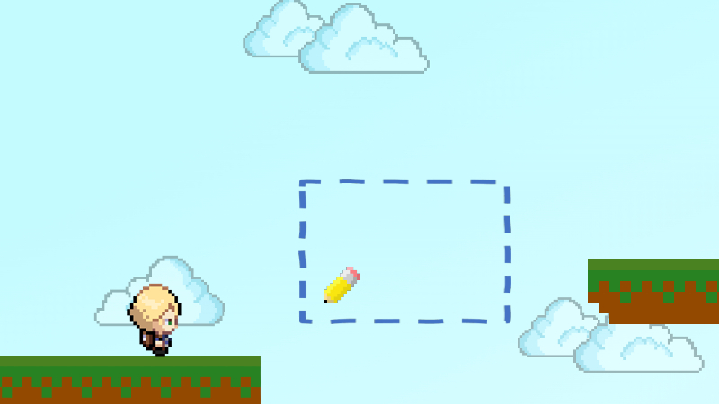
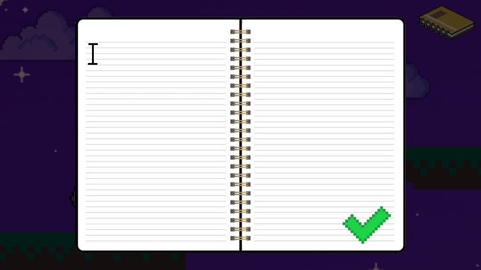

Op deze pagina kan u van alles te weten komen over de game DreamSolve,
een gratis te spelen online platformspel op de pc bedoeld voor kinderen van zeven tot negen jaar oud!
Keuzenkamp, F. (2022a, mei 19).
Character Animation [GIF].
https://media.discordapp.net/attachments/945257426008031232/976797182508286022/PixelAnimation.gif
Drie vrienden gaan in een fantasiewereld genaamd Dreamworld op zoek naar een schat.
Tijdens de reis naar de schat beleven zij een enorm avontuur!
Ze moeten enorme kliffen oversteken, bergen beklimmen en tegelijkertijd oppassen voor gevaarlijke (kindvriendelijke) wezens...
Sunchoote, S. (z.d.). Treasure Chest [Illustratie].
DreamStime. https://www.dreamstime.com/vector-pixel-art-isolated-treasure-chest-image177318020
Om de schat te vinden, moeten de vrienden eerst de schatkaart die ze hebben gevonden, compleet maken!
De schatkaart is namelijk over Dreamworld verspreid in vier stukken...
Delia, P. (2019, 25 oktober). A map to Buried Treasure! [Illustratie]. Twitter. https://twitter.com/pixiedelia/status/1187613989934551040
Teken!
Gelukkig hebben zij hun stiften meegenomen!
Hiermee kunnen zij namelijk van alles tekenen om hunzelf te helpen op deze reis!
Ze tekenen bijvoorbeeld een brug om een gevaarlijke rivier over te steken!


Keuzenkamp, F. (2022, mei 30). Char 1 [Illustratie]. https://i.ibb.co/qCNzrdJ/Char1.png
Keuzenkamp, F. (2022, mei 30). Char 2 [Illustratie]. https://i.ibb.co/W0yBfRs/Char2.png
Keuzenkamp, F. (2022, mei 30). Char 3 [Illustratie]. https://i.ibb.co/42xQW5z/Char3.png
Robb, J. (z.d.). Pixel Pencil [Illustratie]. Pinterest. https://nl.pinterest.com/pin/514888169869097111/
Mackie, F. T. W. (2015, 2 februari). Simple 2D Platforms/Ground for 2D games [Illustratie]. Deviant Art. https://www.deviantart.com/mackieftw/art/Simple-2D-Platforms-Ground-for-2D-games-511288073
Schrijf!
Daarnaast kan het notitieblok ook nog worden gebruikt!
Alles wat hierin wordt geschreven komt tot leven!
Dus misschien toch een vliegende badkuip in plaats van een brug?

Keuzenkamp, F. (2022, mei 30). Char 1 [Illustratie]. https://i.ibb.co/qCNzrdJ/Char1.png
Keuzenkamp, F. (2022, mei 30). Char 2 [Illustratie]. https://i.ibb.co/W0yBfRs/Char2.png
Keuzenkamp, F. (2022, mei 30). Char 3 [Illustratie]. https://i.ibb.co/42xQW5z/Char3.png
Poliakevych, O. (z.d.). Blank Notepad [Illustratie]. DreamStime. https://www.dreamstime.com/blank-notepad-white-notebook-mockup-isolated-design-promotion-business-organizer-clear-template-stock-image-eps-image210940606
Check Mark. (2018). [Illustratie]. Pixel Art Maker. http://pixelartmaker.com/art/f16ad646c771cf9
PNG EGG. (z.d.). Computer Mouse Pointer [Illustratie]. PNG EGG. https://www.pngegg.com/en/png-nmqfx
Silva, K. (z.d.). Pixel Art Notebook [Illustratie]. ShutterStock. https://www.shutterstock.com/nl/image-illustration/pixel-art-notebook-sheets-isometric-8bit-1470820175
Mackie, F. T. W. (2015, 2 februari). Simple 2D Platforms/Ground for 2D games [Illustratie]. Deviant Art. https://www.deviantart.com/mackieftw/art/Simple-2D-Platforms-Ground-for-2D-games-511288073
Segawa, A. (2010). Winged Dotted Bath Tub [Illustratie]. Fandom. https://scribblenauts.fandom.com/wiki/Winged_Dotted_Bath_Tub
Alles is mogelijk in DreamSolve!
Achter dit spel zit ook een doel.
Ons doel is namelijk de creativiteit van uw kind bevorderen!
Uit onderzoek is namelijk gebleken dat kinderen hun creativiteit verliezen, wanneer zij tussen
de zeven en negen jaar oud zijn.
Dit is natuurlijk zonde, want met creativiteit kan je heel veel!
Zo kan je met creativiteit op hele originele oplossingen komen voor problemen.
Dit soort personen worden steeds vaker gezocht in alle verschillende sectoren van de samenleving.
Wanneer de kinderen creatief blijven op een jongere leeftijd,
hoeven zij hun creativiteit op een latere leeftijd niet terug te vinden!
Hoe DreamSolve creativiteit bevorderd
DreamSolve bevorderd de creativiteit door problemen te geven in de levels.
Deze problemen zijn problemen als een grote klif tussen de speler en het doel
of een enorme en steile berg die het pad blokkeert.
Om deze problemen op te lossen, geven we de kinderen twee mogelijkheden:
de stiften en het notitieblok.
Verder zitten er geen richtlijnen vast aan het oplossen van het probleem,
waardoor de kinderen alle vrijheid hebben om het probleem op te lossen op hun eigen manier.
Doordat de kinderen geheel zelf moeten nadenken hoe ze dit probleem gaan oplossen, zijn de kinderen
probleemoplossend aan het denken, wat een groot gedeelte is van creativiteit.
Een ander aspect wat we hebben toegevoegd is dat de kinderen niet dood kunnen gaan.
Wanneer ze bijvoorbeeld in de klif vallen, verschijnen ze meteen weer op de beginplaats.
Alles wat ze in het level hebben geplaatst blijft op z'n plek staan.
De kinderen hoeven dus nooit helemaal opnieuw te beginnen.
We hebben ervoor gekozen om het karakter niet dood te laten gaan, omdat dit wellicht demotiverend kan
werken tegenover de kinderen.
Dit gevoel willen we ze niet geven, want fouten maken hoort nu eenmaal bij het creatieve proces.
Door de kinderen te leren dat fouten maken niet iets ergs is, wordt de creativiteit nog meer bevorderd!
Voor de besturing van het spel is niet iets extra's nodig, zoals een controller.
Aan een toetsenbord en een muis of touchpad heeft uw kind voldoende!
Bewegen
Om te kunnen bewegen, heeft uw kind verschillende opties.
Om naar rechts te lopen, kan uw kind ervoor kiezen om de D-toets ingedrukt te houden óf de RECHTERPIJL-toets.
Om naar links te lopen, kan de A-toets of de LINKERPIJL-toets ingedrukt houden.
Springen kan worden gedaan door op de W-toets, BOVENPIJL-toets of Spatiebalk te klikken.
Tekenen
Om te kunnen tekenen hoeft uw kind alleen de muis te bewegen naar het tekenvak en dan de linker-muisknop
ingedrukt te houden!
Notitieblok gebruiken
Om het notitieblok te gebruiken, moet uw kind op de E-toets klikken of op het notitieblok klikken dat in de
rechterbovenhoek staat.
Nadat hierop is geklikt opent het notitieblok en kan uw kind een woord typen aan
de hand van het toetsenbord!
Het team
DreamSolve is gemaakt door vier studenten van de opleiding Creative Media & Game Technologies.
Deze studenten zijn:
- Aiden Deighton
- Boy Kik
- Fleur Keuzenkamp
- Koen Seppenwoolde